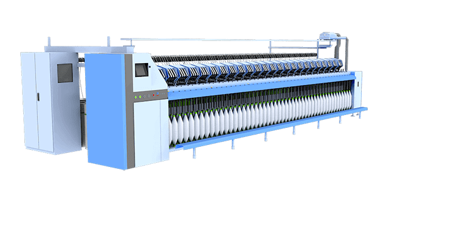
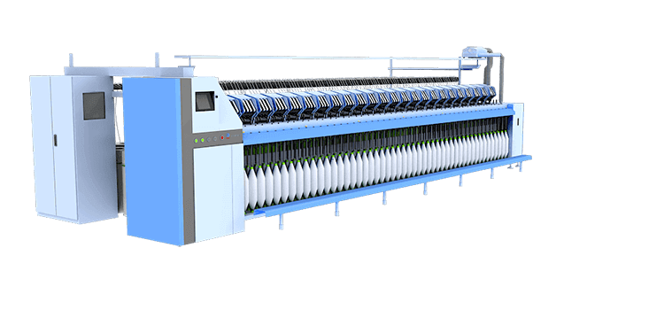
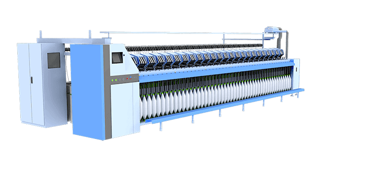

 



-

-

-


吹风嘴可以有效清除车面上的飞花。避免了粗纱上飞花的附入，减少了纱疵，为纺制高档产品创造了积极条件。
采用间歇式回转绒带上下清洁器，置配以机后的吸尘装置，有效清除上龙筋台面的飞花和下清洁器梳片刮下的绒带花以及前罗拉处的积花。
400条筒
500条筒
采用积极式喂给装置，导条辊采用铝合金型材制成，可以配置Φ400、Φ500棉条筒。变换链轮可调节导棉辊与后罗拉之间的张力牵伸。
B型粗纱机
C型粗纱机
JWF1436B型粗纱机控制特点
1、多段速纺纱，纺纱速度在显示屏可设。
2、定长定位停功能，满纱前提前换向，停止于设定长度和停车位置，提高纺纱效率，节约原材料。
3、张力调整：在纺纱过程中，对纱的张力可进行在线微调，并可进行换向张力和小纱张力调整。
4、具有断电保护功能，有效地预防突然断电停车全车断头问题。
5、在线故障检测功能，自动存储故障记录，停车记录。
6、具备网络功能，可实现用户网络管理，进行集中管理，网络诊断，提高生产效率。

216锭距
185锭距